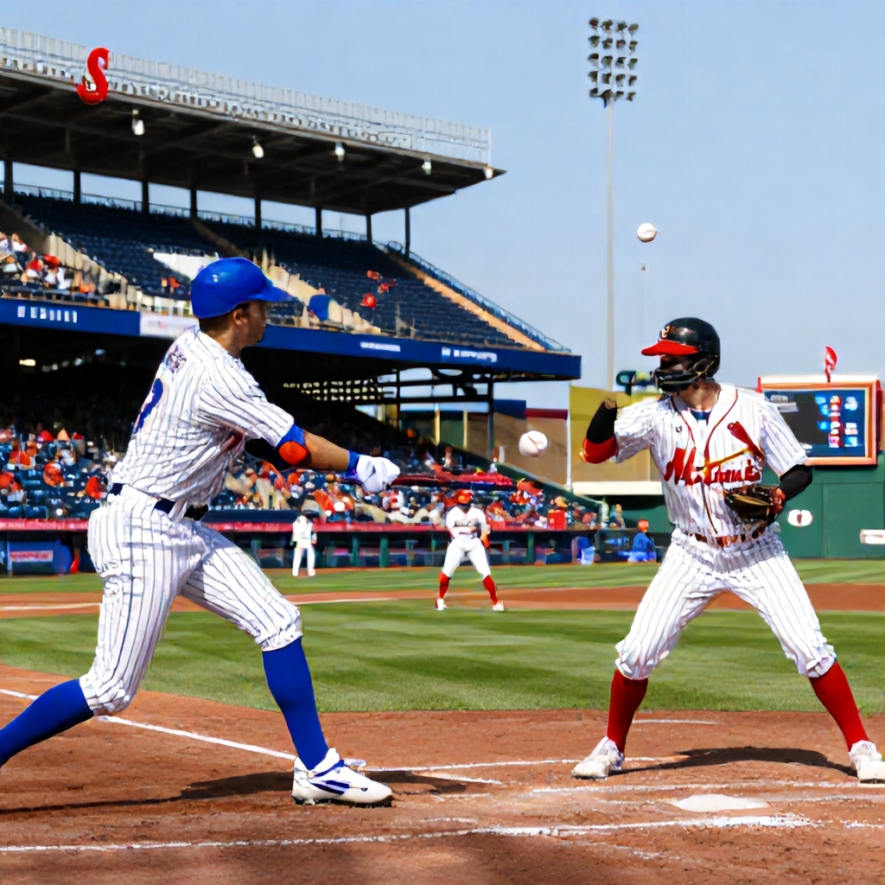

Lead
The New York Mets face the St. Louis Cardinals in a crucial MLB matchup on June 11, 2026, with the Mets listed as slight underdogs at +100 odds. With both teams competing for playoff positioning, this game could be a pivotal moment for either squad.
Game Overview
The Mets and Cardinals meet in what promises to be an exciting contest, with betting lines reflecting a relatively close matchup. The Mets are currently priced at +100, while the Cardinals are at +175. The total for the game is set at 9 runs, with no spread available.
Analysis
At first glance, the odds suggest the Cardinals are expected to win, but the Mets' moneyline at +100 offers attractive value. The betting market shows a narrow margin between the two teams, which may reflect their competitive standings or recent form. The Cardinals’ +175 odds indicate they are perceived as the better team, but the Mets’ +100 payout suggests a potential upset or at least a competitive game.
The betting market also reflects the overall strength of both teams. While the Cardinals have a slight edge in terms of odds, the Mets are not being heavily favored. This balance makes for an intriguing betting scenario where the underdog could offer substantial returns.
Betting Recommendation
Moneyline Bet: New York Mets +100
Despite the Cardinals being slightly favored, the Mets' +100 moneyline presents a solid opportunity. If the Mets can secure a win, the return would be substantial, especially considering the low risk associated with a straightforward moneyline bet. The game’s total of 9 runs also suggests a potentially high-scoring affair, which could benefit the Mets if they can capitalize on scoring opportunities.
In conclusion, while the Cardinals are slightly more likely to win according to the betting lines, the Mets' +100 odds provide a favorable payout for those willing to take a calculated risk on a competitive game. This matchup should offer both excitement and potential value for bettors.
Conclusion
The Mets vs Cardinals game is a classic example of a close matchup with significant betting potential. The Mets' moneyline at +100 provides a strong incentive for bettors to consider backing them, especially if they believe the team can perform well against the Cardinals. With a total of 9 runs expected, fans and bettors alike should anticipate a high-scoring game that could go either way.